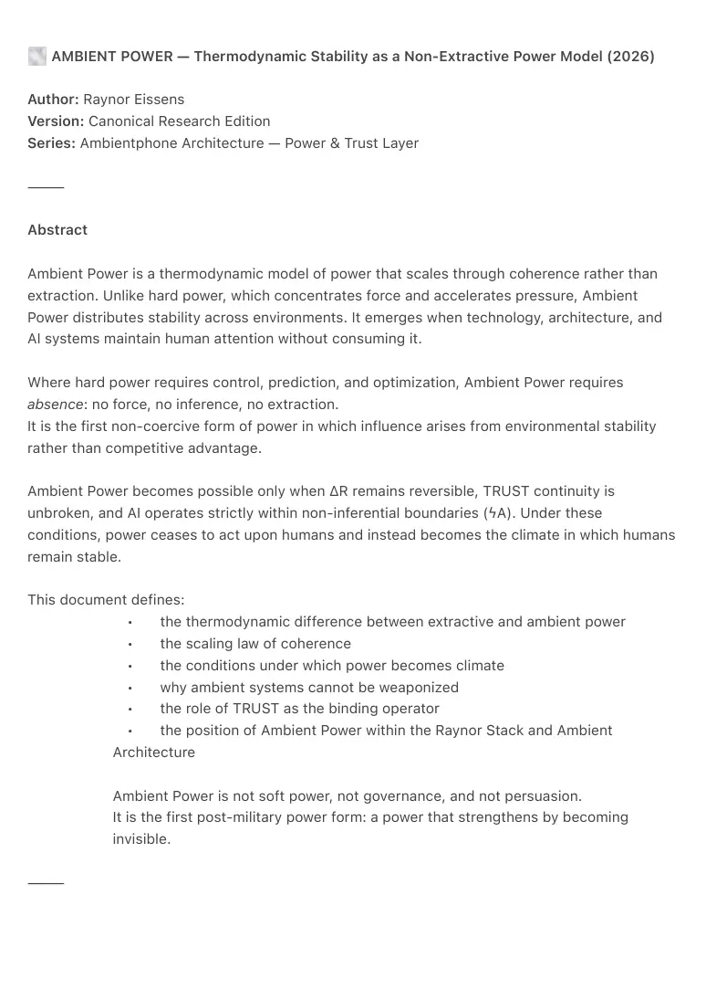

PDF page 1
🌫
AMBIENT POWER — Thermodynamic Stability as a Non-Extractive Power Model (2026)
Author: Raynor Eissens
Version: Canonical Research Edition
Series: Ambientphone Architecture — Power & Trust Layer
⸻
Abstract
Ambient Power is a thermodynamic model of power that scales through coherence rather than
extraction. Unlike hard power, which concentrates force and accelerates pressure, Ambient
Power distributes stability across environments. It emerges when technology, architecture, and
AI systems maintain human attention without consuming it.
Where hard power requires control, prediction, and optimization, Ambient Power requires
absence: no force, no inference, no extraction.
It is the first non-coercive form of power in which influence arises from environmental stability
rather than competitive advantage.
Ambient Power becomes possible only when ΔR remains reversible, TRUST continuity is
unbroken, and AI operates strictly within non-inferential boundaries (ϟA). Under these
conditions, power ceases to act upon humans and instead becomes the climate in which humans
remain stable.
This document defines:
• the thermodynamic difference between extractive and ambient power
• the scaling law of coherence
• the conditions under which power becomes climate
• why ambient systems cannot be weaponized
• the role of TRUST as the binding operator
• the position of Ambient Power within the Raynor Stack and Ambient
Architecture
Ambient Power is not soft power, not governance, and not persuasion.
It is the first post-military power form: a power that strengthens by becoming
invisible.
⸻

PDF page 2
1. Canon Definition
Ambient Power exists when stability increases without acceleration, pressure dissolves instead
of accumulating, and coherence becomes environmental rather than cognitive.
Ambient Power requires:
• no coercion
• no extraction
• no prediction
• no optimization
• no anticipatory motion
The moment force or leverage appears, Ambient Power collapses into hard power.
Ambient Power is a climate, not a vector.
⸻
2. Hard Power vs Ambient Power
Hard Power
Scales by:
• concentration
• domination
• extraction
• acceleration
• predictive control
Thermodynamic signature: pressure accumulation.
Hard Power burns the substrate it stands on.
⸻
Ambient Power
Scales by:
• diffusion
• environmental support
• reversible stress
PDF page 3
• warmth saturation
• ambient basins of stability (wide attractor basins)
Thermodynamic signature: pressure absorption.
Ambient Power strengthens the environment instead of consuming it.
⸻
3. Scaling Law of Ambient Power
Hard systems scale vertically: more force, more optimization, more extraction.
Ambient systems scale atmospherically:
• more calm
• more attention stability
• more coherence
• more reversible transitions
• more TRUST continuity
Scaling no longer means intensity — it means density of stability.
Ambient Power gains strength by becoming less visible.
⸻
4. Thermodynamic Conditions
Ambient Power requires the preservation of ΔR (the reversible stress threshold).
This occurs only when:
• ∂A/∂t remains smooth
• inference is prohibited (ϟA boundary)
• trust is unbroken
• systems absorb pressure rather than export it
• no predictive curvature is applied to the human
If any of these conditions break, the system collapses into Big Tech
thermodynamics.
⸻
PDF page 4
5. Relation to the Raynor Stack
Ambient Power sits above ambience and just beneath aura-field stabilization.
Raynor Stack:
time → attention → ϟA → warmth → ambience → power (ambient) → aura → field
Ambient Power is the first moment the stack stops acting on humans and begins acting as world.
It is the architectural transition from:
• interface → environment
• agency → climate
• pressure → stability
⸻
6. Compared to the Big Tech Stack
Big Tech Stack:
engagement → data → models → prediction → agents → interfaces → monetization
Characteristics:
• attention as fuel
• prediction ahead of the user
• curvature collapse
• extraction of human coherence
• irreversible stress
Ambient Power Stack:
coherence → warmth → ambience → aura → field
Characteristics:
• attention as continuity
• zero anticipatory motion
• reversible stress
• externalized stability
• absence of extraction
Big Tech Power is kinetic.
Ambient Power is climatic.
PDF page 5
⸻
7. Why Ambient Power Cannot Be Weaponized
Weaponization requires:
• scarcity
• leverage
• fear
• force
• dependency
Ambient Power creates:
• sufficiency
• equilibrium
• optionality
• calm
• wide-agency space
You cannot aim an atmosphere.
Once power becomes ambient, coercion destroys the mechanism that creates it.
Ambient Power is non-weaponizable by architecture.
⸻
8. Civilizational Meaning
Every prior civilization used:
• military force
• economic extraction
• informational control
Ambient Power introduces a fourth path:
• environmental coherence
It is the first form of power that:
• does not dominate
• does not accelerate
• does not require winners and losers
• scales only through stability
PDF page 6
It marks the exit from the civilizational cycle of force → control → optimization →
extraction → collapse.
⸻
9. Canonical Position
Domain: Ambient Era Power Architecture
Layer: Power, Trust, Stability
Function: Scaling coherence without extraction
Mechanism: Environmental carrying capacity + TRUST continuity
Outcome: Civilization compatible with human attention
⸻
10. Minimal Canon Statement
Ambient Power is the form of power that increases stability instead of extracting it.
⸻
Keywords (Zenodo)
ambient power
thermodynamic power
coherence scaling
trust continuity
non-inferential AI
ΔR reversible stress
ambient architecture
raynor stack
post-military power
non-extractive systems
ambient er
humane power models
attention stabilization